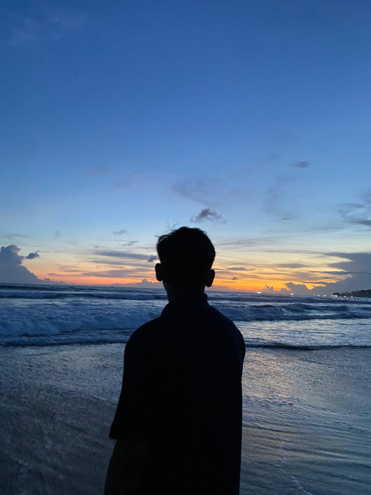

Herdyan Tri Tama
Perkenalkan, saya Herdyan Tri Tama, mahasiswa semester 3 Program Studi Teknik Informatika. Saya memiliki ketertarikan pada dunia teknologi, khususnya pengembangan website, jaringan komputer, dan teknologi digital. Saat ini saya sedang mempelajari berbagai dasar pemrograman dan teknologi informasi melalui perkuliahan maupun praktik mandiri. Saya senang mencoba hal baru, mempelajari cara kerja teknologi, dan mengembangkan kemampuan melalui berbagai proyek sederhana. Saya berharap dapat terus menambah pengalaman, meningkatkan keterampilan, serta mengembangkan pengetahuan di bidang teknologi informasi.